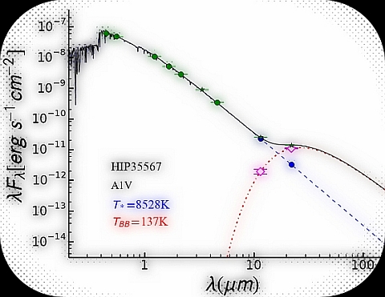
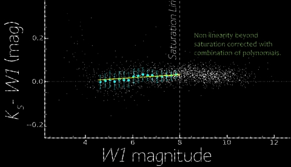

-
TWINKLE

I present a ( in development ) Python spectral energy distribution characterization (SED) code. Give it photometry/spectra and get out star temperature and rough radius properties. It can also characterize any excess flux. -
WISE Saturation Corrector: W1

Want to get corrected photometry from WISE All-Sky for WISE W1? Check out this calculator to quickly get corrected WISE photometry!
-
-
WISE Saturation Corrector: W2

Want to get corrected photometry from WISE All-Sky for WISE W2? Check out this calculator to quickly get corrected WISE photometry!